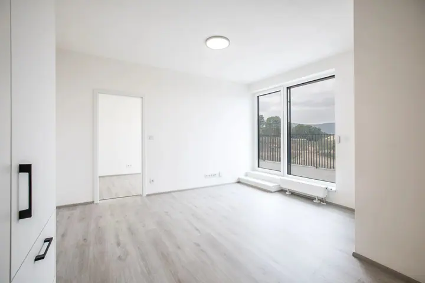
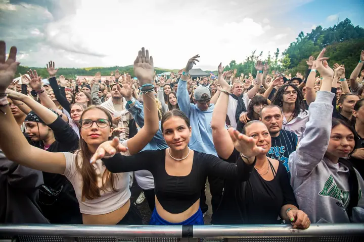

01 / 04
Svatby
Svatby fotím nejčastěji. Jsem s vámi u obřadu, mezi hosty i na společném focení v přírodě.
Zeptat se na termín→




Svatby, sport a akce na Liberecku
Zeptat se na termín →(01) Ahoj
Jmenuji se Petr Zbranek a pod značkou AZ fotky fotím hlavně svatby , sportovní závody a reportáže z koncertů a výstav . Působím zejména v Libereckém kraji, ale po dohodě přijedu kamkoli v republice i do zahraničí.
(02) Co fotím
01 / 04
Svatby fotím nejčastěji. Jsem s vámi u obřadu, mezi hosty i na společném focení v přírodě.
Zeptat se na termín→02 / 04
Fotím sportovní závody a reportáže z koncertů, výstav a dalších akcí. Fotky zachycují atmosféru, akci i lidi kolem.
Zeptat se na termín→03 / 04
Fotím ženské portréty v ateliéru se světlem i venku v přírodě. Na webu mám i samostatnou galerii fotek psů.
Zeptat se na termín→Dále nabízím
Nafotím byty a domy na prodej nebo k pronájmu. Nově nabízím i letecké fotky z dronu.
↗(03) Portfolio
Kliknutím fotku zvětšíte · fotografie jsou ilustrační
(04) Postup
Od první zprávy po hotovou galerii.
Krok 1 z 4
Napište mi nebo zavolejte, o jakou akci jde, kdy a kde se koná. Ověřím, jestli mám volný termín.
Krok 2 z 4
Projdeme spolu harmonogram, místo a to, na čem vám nejvíc záleží. U svatby i program dne a společné focení.
Krok 3 z 4
V den akce jsem na místě včas a fotím po celou domluvenou dobu, podle potřeby i dronem.
Krok 4 z 4
Fotky vyberu, upravím a předám vám je v online galerii připravené ke stažení.

Svatba, závod nebo koncert. Rád u toho budu.
(05) Za objektivem
Nejvíc času trávím na svatbách a sportovních akcích. Jeden víkend jsem u obřadu na louce, druhý v cíli běžeckého závodu nebo u startu triatlonu, kde se všechno děje během pár vteřin.
Kromě toho fotím reportáže z koncertů, výstav a různých happeningů, portréty v ateliéru i venku, psy a reality. Nově nabízím také focení dronem, takže se na dům, krajinu nebo celou akci můžete podívat i shora.
Fotím hlavně v Libereckém kraji, který mi nabízí hory, louky i města. Když mě potřebujete jinde, rád se domluvím a přijedu za vámi po celé republice nebo i do zahraničí.
Petr
Petr Zbranek · Svatební, sportovní a reportážní fotograf
Ano. Nejčastěji fotím na Liberecku, ale po dohodě přijedu kamkoli v republice i do zahraničí.
Ano, focení dronem nově nabízím. Záleží na místě a počasí, proto to vždy probereme předem.
Cena se odvíjí od druhu focení, délky a místa. Napište mi, co plánujete, a pošlu vám konkrétní nabídku.
Ano, dělám reportáže z koncertů, výstav, sportovních závodů a různých happeningů. Fotím i reality pro prodej nebo pronájem.
(07) Kontakt
Napište pár vět o tom, co si představujete, a termín, který se vám hodí.